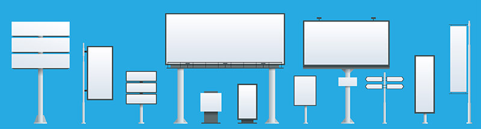
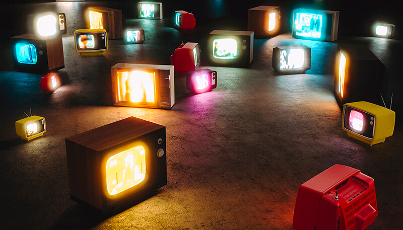

К настоящему времени сложились два основных подхода к определению термина «реклама». В узком смысле понятие «реклама» означает объявление в средствах распространения информации. Эта точка зрения наиболее распространена в западной практике. В российской практике понятие «реклама» трактуется в более широком смысле. К рекламе относят также и выставочные мероприятия, коммерческие семинары, проспекты, каталоги, плакаты и так далее.
Реклама — это однонаправленная форма неличной коммуникации, осуществляемая на платной основе с целью привлечения внимания к объекту рекламирования.
Задача рекламы — побудить представителей целевой аудитории к действию (выбору товара или услуги, осуществлению покупки и т. п., а также формированию запланированных рекламодателем выводов об объекте рекламирования, повышение узнаваемости среди клиентов).
Что такое реклама
На сегодняшний день существует множество определений понятия «реклама». Это свидетельствует, с одной стороны, о сложности самого явления, с другой стороны — о существовании различных точек зрения на его системообразующие характеристики. В российской практике к настоящему времени сложились три основные группы подходов к определению рекламы: информационная, деятельностная, а также объединяющая их группа, которую можно назвать интегральной.
- Информационная группа. Идентифицирует рекламу, прежде всего, как информацию — сообщение, представляющее аудитории некоторый объект, явление, процесс и тому подобное. Именно такая точка зрения отражена в Федеральном законе «О рекламе». В законе России используются следующие основные понятия, связанные с определением рекламы:
- Объект рекламирования — товар, средство его индивидуализации, изготовитель или продавец товара, результаты интеллектуальной деятельности либо мероприятие (в том числе спортивное соревнование, концерт, конкурс, фестиваль, основанные на риске игры, пари), на привлечение внимания, к которым направлена реклама.
- Товар — продукт деятельности (в том числе работа, услуга), предназначенный для продажи, обмена или иного введения в оборот.
- Ненадлежащая реклама — реклама, не соответствующая требованиям законодательства Российской Федерации.
- Рекламодатель — изготовитель или продавец товара либо иное определившее объект рекламирования и/или содержание рекламы лицо.
- Рекламопроизводитель — лицо, осуществляющее полностью или частично приведение информации в готовую для распространения в виде рекламы форму.
- Рекламораспространитель — лицо, осуществляющее распространение рекламы любым способом, в любой форме и с использованием любых средств.
- Потребители рекламы — лица, на привлечение внимания которых к объекту рекламирования направлена реклама.
Законодательное определение рекламы часто подвергается критике в связи с определением рекламы исключительно как «информации», прежде всего из-за разности в подходах к определению понятия «информация» и связанных с этим сложностей в идентификации конкретных информационных сообщений как сообщений рекламных.
- Деятельностная группа. Реклама не сводится к «информации» и «сообщению», а понимается в этих определениях как деятельность по рекламированию, то есть по созданию таких «сообщений», и доведению их до получателей. Понятие «реклама» уравнивается с понятием «рекламная деятельность» и представляется в качестве системы видов деятельности. Именно такой позиции придерживается основная часть российского рекламного корпоративного сообщества в лице своих профессиональных объединений. Оно считает, что реклама — это не «рекламная информация», а вид деятельности. Соответственно, и законодательные нормы должны быть направлены на регулирование «деятельности», а не «сообщения».
- Интегральная группа. Реклама — это явление включает в себя одновременно и рекламную деятельность, и рекламную информацию. В рамках интегрального подхода реклама понимается как вид деятельности, либо произведенная в её результате информационная продукция.
Рекламу можно рассматривать как системное единство двух компонентов — рекламной информации и рекламной деятельности. Реклама, таким образом, идентифицируется как область социальной практики, с присущими этой практике отношениями, процессами, результатами. Подтверждением обоснованности такого подхода может служить и тот факт, что последняя редакция Федерального закона Российской Федерации «О рекламе» направлена на правовое регулирование как рекламных сообщений, так и рекламной деятельности/
Вот еще несколько популярных определений:
- Реклама — ответвление массовой коммуникации, в русле которого создаются и распространяются информационно-образные, экспрессивно субъективные тексты, адресованные группам людей с целью побудить их к определенному выбору или поступку.
- Реклама — это оплаченная, неперсонализированная коммуникация, осуществляемая идентифицированным спонсором и использующая средства массовой информации с целью склонить (к чему-то) или повлиять (как-то) на аудиторию.
- Реклама — процесс донесения информации от рекламодателя до целевой аудитории посредством медиа-каналов или иными способами.
- Реклама — коммерческое средство массовой информации, созданное для того, чтобы стимулировать сбыт продукта или услуги, или же информационное сообщение со стороны института, организации или кандидата на какой-либо политический пост.
История развития
Реклама появилась вместе с бартером. Древние люди обменивались товарами, которые считали равноценными, к примеру, меняли козу на оружие и так далее. Существование рекламы в доисторическое время подтверждается, например, найденным археологами египетским папирусом с объявлением о продаже раба. До появления письменности люди использовали устную рекламу, объявления голосом. Для этого были так называемые зазывалы (в наше время – это промоутеры). В античном мире появились первые профессиональные специалисты по рекламе – они составляли тексты рекламных объявлений и размещали работы в центральной части города, крепили на конструкции. Существовала также практика зачитывать такую информацию публично.
Современная же реклама начала развиваться после изобретения конструкции печатного станка. Это стало большим шагом для индустрии маркетинга. Благодаря печатным станкам можно было создавать очень большие тиражи объявлений, установить рекламу на поток.
Основателем современной рекламы принято считать Теофраста Рондо, а первой компанией, специализирующейся на рекламе – основанную в 1842 году компанию американца Волни Палмера.
Большим успехом пользовалась и пользуется социальная реклама. Первый пример подобного рода – плакат автора Джеймса Флегга с названием “ты нужен американской армии”, созданный в 1917 году. Потом похожий плакат появился и в советском союзе.
Очередной толчок к развитию рекламы – появление фотографии. Реальное изображение стало неопровержимым доказательством достоинств и плюсов продвигаемого объекта. Но ещё более грандиозные события в данной отрасли маркетинга стали происходить в 20 веке. В XX веке развитию рекламы способствовали следующие события:
- возникновение полноцветной полиграфии;
- появление и развитие телевидения;
- развитие спутниковых средств коммуникаций;
- повсеместное внедрение компьютеров и возникновение Интернета.
В СССР, несмотря на плановую экономику и дефицит, коммерческая реклама тоже была. Больше всего ее было во времена НЭП 1920-х годов. Например, широко распространялся слоган «Советское — значит отличное», а на советском телевидении выходила рекламная телепередача «Больше хороших товаров» и другие, идеи контролировала Москва.
В течение длительного времени реклама в СССР существовала в строго ограниченном пространстве и была монополизирована государством. Однако в середине 1980-х в средствах массовой информации появилась реклама западного образца.
Период с 1988 по 1995 год — время бурного развития отечественного рекламного рынка, как передающего, так и производящего. Происходит становление и рынка рекламодателей. Это время закладывания фундамента рынка рекламы.
1995—2000 годы — период стабильного роста. Анализ современного аспекта развития рекламного бизнеса показывает, что данные тенденции усиливаются.
По сей день реклама развивается параллельно с техническим и научным прогрессом, имеет разные типы и виды. В настоящее время это профессионально организованная и максимально эффективная отрасль торговли и маркетинга. Рекламу делают просто все компании современности от известных до новых. Успех нередко зависит от цены, которую они готовы заплатить, и множестве других факторов. Новеньким компаниям сложно конкурировать крупными компаниями. Бешеную популярность набирает реклама в Интернете, являясь частью маркетинга в сети Интернет. Как правило, сейчас ваше объявление может набрать максимальный отклик за счет рекламы в интернете. Она имеет массу преимуществ от цены до конкуренции. Там можно размещать объявления на сторонних сайтах, где множество потенциальных клиентов согласно нише, или можно создать свой собственный сайт, это не менее хорошая идея. На своем сайте можно отслеживать трафик, смотреть какая конверсия, сделать кнопку регистрации. Высокая активность дает вам право брать на рекламу другие товары, что позволит пассивно зарабатывать.
Можно рассылать по почте новости и скидки, что может привести к продаже. Обычно используется графический контент, который привлекает внимание, видео ролики. Подробнее об этой теме про интернет-маркетинг и продвижение в интернете вы можете узнать ниже в статье.
Участники рекламного процесса
Современный рынок рекламы включает в себя четыре основных субъекта, каждый из которых выполняет свои функции. Пятым субъектом выступает регулирующий орган. Участники рекламного процесса:
{kind=link}
- Рекламодатель — это рынкообразующий субъект рынка рекламы, инициатор рекламного процесса, создает спрос на рекламные услуги и выполняет функцию заказчика рекламных услуг. В Федеральном законе «О рекламе» рекламодатель определяется как изготовитель или продавец товара либо иное определившее объект рекламирования и (или) содержание рекламы лицо. Функции:
- Рынкообразующая. Через заказ на разработку, изготовление и размещение рекламы.
- Целевая. Определение рекламодателем объекта рекламы и формулировании цели заказываемой им рекламы.
- Эвристическая. Требований к форме и содержанию заказываемой рекламы, сформулированных в виде специального документа (брифа).
- Финансовая. Организации финансирования рекламной услуги.
- Информационно-аналитическая. Организация обратной связи.
- Рекламопроизводитель — это рынкообразующий субъект рынка рекламы, создающий предложение на рекламные услуги и оказывающий их по заказу рекламодателей. В законе «О рекламе» определяется как лицо, осуществляющее полностью или частично приведение информации в готовую для распространения в виде рекламы форму. Это рекламные агентства, которые получают заказ на рекламу, обеспечивают полный рекламный процесс. Их развитие обусловлено большей эффективностью за счет систематического подхода к рекламе, опыту. Также агентства берут на себя весь спектр рекламных обязанностей, что удобно для рекламодателей. Формы финансовых взаимоотношений между рекламодателями и рекламопроизводителями:
- выплата комиссионных;
- выплата гонораров;
- почасовая оплата (договорные расценки);
- комбинированная оплата (комиссионные + почасовая оплата, либо комиссионные + гонорар);
- выплата дополнительных комиссионных в виде бонусов.
По масштабу деятельности и территориальному охвату бывают:
- Глобальные
- Национальные
- Региональные
По характеру и объему предоставляемых услуг подразделяются на:
- полносервисные рекламные агентства
- специализированные рекламные агентства
- сетевые рекламные агентства
- внутрифирменные рекламные агентства
- Рекламораспространитель — субъект рынка рекламы, который по заказу рекламодателя или рекламопроизводителя распространяет оплаченную рекламную информацию по каналам передачи рекламы и через рекламоносители. В Федеральном законе «О рекламе» рекламораспространитель определяется как лицо, осуществляющее распространение рекламы любым способом, в любой форме и с использованием любых средств. Основные группы предприятий:
- Средства массовой информации (СМИ)
- Операторы рекламы
- Медийные агентства
- Потребитель рекламы — субъект рынка рекламы, получатель рекламной информации. В Федеральном законе «О рекламе» потребители рекламы определяются как лица, на привлечение внимания которых к объекту рекламирования направлена реклама. Виды:
- B2C-реклама — потребительская реклама, действие которой направлено на индивидуальных, или так называемых «конечных», потребителей.
- B2B-реклама — деловая реклама, действие которой направлено на организации и сферу бизнеса.
- Государство — регулирующий субъект. Его нельзя отнести, в силу специфики и масштабов влияния его функций, ни к основным, ни к второстепенным объектам. Функция государства на рынке рекламы — законодательная и контролирующая, то есть государство проводит и устанавливает «правила игры» на рынке и контролирует их соблюдение. К основным функциям государственного контроля на рынке рекламы относится борьба с ненадлежащей рекламой, предупреждение и пресечение монополизма и недобросовестной конкуренции. Происходит на региональном и федеральном уровнях.
Признаки рекламы
Исходя из определения понятия "реклама", изложенного в п. 1 ст. 3 ФЗ "О рекламе", можно выделить приведенные ниже признаки указанной дефиниции. Именно совокупность указанных в пункте 1 ст. 3 Закона о рекламе признаков позволяет отнести информацию к рекламе.
{kind=link}
- Реклама — это информация, содержащая сведения о товаре, услуге, их свойствах; лице-изготовителе, продавце, а также их координатах, реквизитах, средствах индивидуализации и видах деятельности, а также иных объектах, в продвижении которых заинтересован участник рекламного рынка.
- Распространение любым способом, в любой форме и любыми средствами. Средства распространения рекламы различны: радио, телевидение, пресса, транспорт, сети электросвязи, реклама на почтовых отправлениях, средства наружной рекламы (рекламные конструкции) и информации. Способы распространения рекламы не ограничены, к таким способам распространения относится также информационно-телекоммуникационная сеть "Интернет".
- Направленность рекламы на неопределенный круг лиц. Под неопределенным кругом лиц понимаются те лица, которые не могут быть заранее определены в качестве получателя рекламной информации и конкретной стороны правоотношения, возникающего по поводу реализации объекта рекламирования.
- Привлечение внимания к объекту рекламирования, формирование или поддержание интереса к нему и его продвижение на рынке. Реклама должна влиять на мотивацию потребителя при выборе товара и побуждать его совершить определенные действия в отношении объекта рекламирования, вступить в конкретные правоотношения купли-продажи по поводу рекламируемой продукции.
Также сюда можно добавить пункты, которые помогают отличить обычную информацию от рекламной:
- Платность создания и передачи сообщения. Реклама является оплаченной формой коммуникации, так как рекламное сообщение создается и передается аудитории на возмездных основаниях, то есть за плату со стороны рекламодателя.
- Источник финансирования рекламы явно указан. Рекламу осуществляет неанонимный рекламодатель — источник рекламного сообщения, идентифицируемый аудиторией.
- Рекламное сообщение неперсонифицировано. Рекламная коммуникация является разновидностью массовой коммуникации — безличностного обмена информацией. Таким образом, рекламная информация предназначается не отдельному физическому или юридическому лицу, а группе таких лиц.
Указанные признаки чаще всего используются для идентификации рекламы и рекламной деятельности. Если деятельность какой-либо организации производит продукцию, удовлетворяющую этим требованиям, она называется рекламной продукцией. По данным признакам также можно определить, относится ли какое-либо предприятие к сфере рекламы.
Функции рекламы
Существуют четыре универсальные функции, которые выполняет любая реклама. Каждую из них разберем подробно ниже в статье.
{kind=link}
- Экономическая функция рекламы. Реклама оказывает влияние на рынок через такие аспекты:
- Формирует спрос и стимулирует сбыт, и тем самым способствует росту оборота товаров и услуг, а, следовательно, и производства.
- Положительно воздействует на разработку и производство новых видов товаров и услуг, предоставляя эффективные способы информирования потребителей об их появлении.
- Обеспечивает потребителей информацией о товаре или услуге, и тем самым помогает им принять лучшее решение о покупке.
- Ей отведена одна из ключевых ролей в процессе создания и продвижения на рынках торговых марок.
- Оказывает определённое воздействие на уровень рыночной конкуренции.
- Развивает тенденции к расширению производства товаров, и тем самым содействует обеспечению занятости в производственном секторе экономики.
- Является одним из главных источников финансирования всех видов средств массовой информации.
- Социальная функция рекламы. Заключается в формировании и закреплении в сознании людей определенных потребительских моделей, ценностей и норм данного общества. Воздействие:
- Способствует формированию определенных стандартов мышления и социального поведения различных общественных групп, а также поддерживает и закрепляет уже существующие традиции и устоявшиеся привычки потребителей.
- Транслирует различным общественным группам предоставляемые обществом человеку материальные, социальные, культурные возможности. Она формирует желание использовать эти возможности, а также заставляет его действовать в направлении удовлетворения этого желания и реализовать предлагаемые возможности изменения своей жизни.
- Воздействует на формирование ценностей и образ жизни человека.
- Способствует осознанному потребительскому поведению, так как помогает сравнивать особенности предложений, предоставляя потребителю возможность принимать решение о покупке уже будучи информированным.
- Повышает уровень культуры потребления, так как сравнивая различные товары и услуги, потребитель в любом случае стремится получить действительно лучшее.
- Распространяет знания из различных сфер человеческой деятельности, прививает потребителям определенные практические навыки.
- Внедряет в сознание людей новые знания и представления о новых способах совершенствования своей жизни.
- Влияет косвенным образом на общественное развитие, так как способствует развитию социальных отношений в сфере потребления, которая является системообразующей социальной практикой в обществе потребления.
- Маркетинговая функция рекламы. Продвижение, или маркетинговая коммуникация, подразделяется на четыре коммуникационных инструмента:
- Реклама.
- Стимулирование сбыта.
- Связи с общественностью.
- Персональные продажи.
Важные функции рекламы в системе маркетинга:
- Идентификация продукта, его производителя или продавца.
- Продвижение товаров или услуг.
- Продвижение торговых марок.
- Информирование потребителей.
- Формирование спроса.
- Стимулирование сбыта.
- Регулирование сбыта.
- Коммуникационная функция рекламы. Состоит из следующих последовательных элементов:
- Коммуникатор — инициатор и источник коммуникации.
- Сообщение — информация, которую источник намерен передать получателю и ради которой осуществляется коммуникация.
- Кодирование — преобразование информации в знаково-символическую форму, то есть в сообщение, воспринимаемое получателем.
- Канал — средство, с помощью которого физически передается сообщение.
- Получатель — адресат, которому передается сообщение.
- Декодирование — расшифровка сообщения получателем.
Указанной схеме соответствует типология агентов рекламной коммуникации, в соответствии с их функциональной последовательностью в коммуникационном процессе:
- Рекламодатель — источник коммуникации.
- Рекламопроизводитель — лицо, осуществляющее кодирование информации рекламодателя в форму, готовую для распространения в виде рекламы и её восприятия аудиторией.
- Рекламораспространитель — лицо, осуществляющее распространение рекламы с использованием средств коммуникации.
- Рекламополучатели — аудитория получателей рекламы.
Цели и задачи рекламы
Хорошая реклама способна долгое время поддерживать интерес к продукту со стороны потребителей, а также способствует продвижению фирмы на рынке. Многие думают, что реклама – это бесполезная информация. На самом деле она выполняет ряд очень важных функций. Реклама выполняет четыре главные задачи:
{kind=link}
- Информирование потребителей о рекламируемом товаре: о новинках, акциях, преимуществах, изменения стоимости и всего сопутствующего.
- Убеждение людей в необходимости совершить какие-либо действия (например, купить товар или воспользоваться услугой);
- Напоминание о необходимости приобрести рекламируемый товар. Например, вы постоянно забываете купить запасную лампочку, но войдя в магазин, видите рекламу этого продукта. Можно с большой уверенностью утверждать, что вы вспомните о запасной лампочке и купите ее;
- Формирование имиджа торговой марки;
У рекламы есть две главные цели: формирование осведомленности об объекте и положительного отношения к нему.
Хорошо организованная рекламная кампания долгое время поддерживает интерес к товару, способствует продвижению бренда и привлечению новой аудитории. Помимо функций, реклама выполняет ряд задач:
- Увеличение спроса на рекламируемый товар;
- Удержание позиций на рынке товаров и услуг
- Поиск новых каналов для реализации продукции;
- Создание эффекта наполненности рынка определенным товаром;
- Создание и поддержание соответствующего имиджа компании на рынке;
- Распространение информации среди потребителей о хорошем качестве продукта.
Роль рекламы в обществе:
- Экономическая (получение прибыли);
- Социальная (достижение общественно полезных целей);
- Политическая;
- Идеологическая (фактор, влияющий на становление и формирование мировоззрения человека);
- Психологическая (воздействует на желания и мечты покупателя, не взывая к его разуму);
- Образовательная. В процессе просмотра рекламы, а также внедрения новых технологий товаров и услуг, о которых она вещает, человек может почерпнуть для себя информацию абсолютно из всех сфер жизни (от причин появления налета на плитке в ванной комнате до последних инновационных разработок в компьютерной технике);
- Эстетическая (культурная). Во многих рекламах очень качественно подобраны цвета, звуки, которые могут повлиять на человека, вызывая в нём желание реализовать рекламное предложение или хотя бы обратить на неё более пристальное внимание.
Виды рекламы
Классификация рекламы может быть осуществлена по различным основаниям.
{kind=link}
- В зависимости от целей рекламы:
- коммерческая (товарная и нетоварная);
- социальная;
- конфессиональная;
- политическая.
- По финансовому принципу:
- активная;
- пассивная;
- Специфические виды по цели
- Контрреклама — опровержение недобросовестной рекламы. В РФ предусмотрена статья в качестве наказания за недобросовестную рекламу.
- Антиреклама — информация, призванная не поднимать, а уменьшать интерес, либо дискредитировать товары, предприятия, товарные знаки. В России запрещена статьей, законом о рекламе.
- «Specs spots» (адекватный термин на русском языке неизвестен) — «рекламные» видеоролики, снятые частными лицами, которые воспринимаются зрителем как официальная реклама.
- По виду рекламируемых товаров:
- алкогольной продукции;
- лекарственных средств, медицинских изделий;
- биологически активных добавок и пищевых добавок, продуктов детского питания;
- продукции военного назначения и оружия;
- ценных бумаг;
- По видам услуг и рекламируемой деятельности:
- для медицинских услуг, методов профилактики, диагностики, лечения и медицинской реабилитации, методов народной медицины;
- реклама основанных на риске игр, пари;
- реклама финансовых услуг и финансовой деятельности;
- услуг по заключению договоров ренты, в том числе договора пожизненного содержания с иждивением;
- реклама деятельности медиаторов по обеспечению проведения процедуры медиации;
- в сфере арбитража (третейского разбирательства).
- туристической деятельности;
- образовательной деятельности и т.д.
- В зависимости от способов размещения рекламы:
- наружная реклама (размещение информации на плакатах, стендах, световых табло и с помощью иных технических средств стабильного территориального размещения). Рекомендуем: "Размещение рекламы, вывески на жилом доме. Судебная практика, комментарии";
- реклама, распространяемая в периодических печатных изданиях, СМИ;
- реклама, распространяемая в радио- и телепрограммах, кино- и видеофильмах, роликах;
- внутренняя реклама;
- реклама, распространяемая с помощью телефонной, почтовой, компьютерной и иной связи.
- В зависимости от категории потребителей рекламы:
- реклама, направленная на потребителей определенных возрастных категорий, например, реклама, обращенная к несовершеннолетним;
- реклама, основными потребителями которой являются женщины;
- реклама, потребителями которой являются лица определенных профессий и т.д.
- Отдельные виды (технологии) рекламы:
- Тизерная реклама (англ. teaser — дразнилка, завлекалка)
- Имиджевая реклама
- Таргетированная реклама
- Контекстная реклама
- Спонсорская реклама
- Реклама посредством СМС. СПАМ
- Вирусная реклама
Средства распространения рекламы
В этой статье мы предложим вам эффективные способы рекламы и продвижения товара, которые существуют на данный момент, а также расскажем, как ими пользоваться. Многие из предложенных вариантов можно сделать бесплатно. Но важно учитывать, что в отличие от обращения к специалистам, бесплатный способ требует огромного запаса времени. А пока разберем основные средства распространения рекламы.
{kind=link}
Медийные средства рекламы
- Реклама телевизионная, на телевидении:
- Беспроводные общенациональные телевизионные каналы.
- Комбинированные (беспроводные и кабельные) общенациональные телевизионные сети.
- Кабельные и спутниковые телевизионные каналы.
- Региональное (местное) телевидение.
- Интерактивное телевидение.
- Синдицированная доставка телевизионных программ.
- Радиореклама:
- Кабельное радио.
- Цифровое радио.
- Интернет-радио.
Все форматы радиовещания подразделяются на четыре основные группы:
- Музыкальные форматы.
- Информационные форматы.
- Комбинированные форматы.
- Специализированные форматы.
- Средства рекламы в прессе:
- Газеты.
- Журналы.
- Потребительские издания.
- Справочные издания.
- Наружная реклама. Все средства наружной рекламы подразделяются на две основные группы:
- Стационарные рекламные носители — постоянное место размещения.
- Временные рекламные носители.
Примеры наружной рекламы:
- Биллборд.
- Суперборд.
- Суперсайт.
- Ситиборд.
- Сити-формат.
- Пиллар.
- Экраны, содержащие ваш текст, контакты (например, e-mail, аккаунт в соцсетях), изображения рекламируемого товара и другое.
- Панель-кронштейн.
- Транспарант-перетяжка.
- Афиша — рекламный плакат.
- Медиафасады.
- Офисные таблички.
- Световые буквы.
- Объемные буквы из жидкого акрила.
- Неоновые вывески.
- Бегущая строка.
- Брандмауэр.
- Оклейка автомобиля.
- Стелы и пилоны в тематических цветах.
- Дизайн бренда и логотип на центрах компании.
- Крышные установки и большие буквы с лого бизнеса.
- Указатели на столбах, таблички.
- Световые короба (лайтбоксы).
- Витрины и тонкие световые панели для декора наружной части.
- И другие рекламные конструкции для установки внутри и снаружи здания.
Креативные билборды, баннеры и другие такие конструкции привлекают целевую аудиторию. Преимущества конструкций в том, что такой вид рекламы охватывает большой диапазон целевой аудитории. Таких рекламных носителей можно разместить несколько и наблюдать как работает каждый. Рекламодателям важно отслеживать достижение целей, а также в рекламном деле немаловажно планирование. Агентства полного цикла предлагают оформление рекламы практически без вашего участия, они эффективно займутся продвижением.
- Средства внутренней или интерьерной рекламы:
- видео ролики и мультимедийной рекламы в помещениях (объединены общим термином Digital Signage), такие как рекламные видеоэкраны и дисплеи различных форматов, рекламное телевидение в помещениях (Indoor TV), мультимедийные промо-стойки, реклама на платёжных терминалах.
- аудио-рекламы в помещениях, такие как звуковые рекламные объявления.
- статической рекламы в помещениях, такие как статические рекламные конструкции и носители различных форматов.
- комплексной организации рекламного пространства в помещениях, такие как рекламные инсталляции, брендирование пространства, оборудования и инвентаря, рекламное экспонирование, рекламное декорирование.
- печатной рекламы в помещениях, такие как рекламные открытки, плакаты, стикеры.
- Рекламные мероприятия в помещениях, такие как промо-акции, дегустации и презентации.
- Транзитная или реклама на транспорте. Подразделяется две основные группы: наружная (внешняя) и внутренняя. Вид транспорта:
- Общественный наземный.
- Метро.
- Авиационный.
- Железнодорожный.
- Водный.
- Коммерческий.
- Такси.
- Личный.
Размещение:
- Крышная.
- Бортовая.
Другие локации:
- Железнодорожные вокзалы.
- Метрополитен.
- Аэропорты.
- Автовокзалы.
- Автозаправки.
Немедийные средства рекламы

- Средства прямой рекламы:
- Почтовая реклама, включая печатные и электронные рассылки.
- Реклама по телефону, иногда рассматривается как составная часть телемаркетинга — продажи товаров или услуг по телефону.
- В средствах массовой информации с механизмом обратной связи (Direct Response Advertising).
- Посредством личного контакта (Direct Personal Advertising), включая личные коммуникации на рекламных мероприятиях и в местах продаж.
- Печатная реклама:
- Каталог.
- Проспект.
- Буклет.
- Листовка.
- Плакат.
- Реклама на сувенирной продукции.
- Средства рекламы в местах продаж:
- POS-материалы.
- Внутренняя реклама, или интерьерная реклама.
- Прямая реклама.
- Рекламные мероприятия.
Выбирать способ рекламы нужно грамотно. Интернет-маркетинг – это эффективный способ привлечь новых клиентов и значительно увеличить прибыльность проекта, поэтому его ни в коем случае нельзя игнорировать.
При этом важно знать специфики и тенденции, самодеятельность может привести к слабо контролируемым последствиям. Каналы и инструменты digital‑маркетинга, интернет-реклама:
- PPC (Pay per Click, плата за клик) — инструмент «Яндекс.Директ», Google Ads).
- SEO (Search Engine Optimization) — оптимизация сайта под требования поисковых систем.
- SMM (Social Media Marketing) — маркетинг в социальных сетях (например, youtube и instagram).
- Direct — прямые коммуникации с пользователями. Это рассылки с персонализированными сообщениями. Есть несколько каналов direct‑маркетинга:
- email‑рассылки, email‑маркетинг, отправка сообщений пользователям на почту
- поп-апы — всплывающие окна на сайте для пользователей
- пуш- и веб-пуш-уведомления — Push-уведомления от сайтов и приложений
- рассылки пользователям через мессенджеры вроде Telegram и WhatsApp
- SMS‑рассылки
Всегда нужно запрашивать на сайте разрешение на обработку данных пользователя, их согласие на рассылку.
- ORM — управление репутацией в онлайне. Каналы ORM:
- сайты‑отзовики — отдельные площадки, на которых люди оставляют отзывы.
- социальные сети — люди могут упоминать бренды или использовать комментарии под постами для отзывов, имеют возможность поделиться. Например, ВКонтакте и Фейсбук
- тексты (печать текста основа продвижения в интернете).
- видеоканал. За счет медийной страницы можно в некоторых случаях получить большую отдачу.
- свой сайт или блог, является отличным способом повысить лояльность аудитории.
- отраслевые рейтинги и каталоги, подтверждающие экспертность и качество работы компании, .
Большинство клиентов выбирают страницы из ТОП-5 поисковика в интернете, о чем говорят многочисленные исследования показов. Поэтому важно вести работы над собственным сайтом, проработать дизайн внутри и обязательно стоит настроить мобильную версию, также нужно SEO оптимизировать страницы, написать тексты и добавить ключевые слова. Рекомендуем найти специалиста, который занимается продвижением, сможет составить задание на тексты, которые будут размещаться.
Рынок рекламы
Рынок рекламы — это место, где встречаются спрос и предложение на рекламные услуги и где возникает их стоимость (цена). Рынок рекламы представляет собой самостоятельный сектор экономики, в рамках которого взаимодействуют субъекты этого рынка — рекламодатели, рекламопроизводители, рекламораспространители и потребители рекламы.

Для функционирования рынка рекламы необходим ряд социально-экономических условий:
- Экономическая свобода субъектов.
- Потребности в рекламных услугах и платежеспособного спроса у потребителей рекламных услуг.
- Наличие производителей рекламных услуг, создающих предложение и конкуренции между производителями рекламных услуг.
- Развитая инфраструктура рынка.
- Наличие правовых актов и законов, регулирующих отношения субъектов рынка.
- Отсутствие государственного административного контроля над рекламной деятельностью и субъектами рынка.
Выступая в качестве экономического регулятора, рынок рекламы выполняет следующие основные функции:
- Объединяет интересы рекламодателей и рекламопроизводителей на экономической основе, базирующейся на удовлетворении потребностей в рекламных услугах, выражаемых через спрос.
- Способствует устранению диспропорций между спросом и предложением на рекламные услуги и приводит их в соответствие с рыночными потребностями.
- Информирует субъектов рынка через экономические показатели о происходящих на рынке экономических процессах.
- Создает условия для развития рекламного бизнеса, стимулирует его эффективность, выявляет лидеров — тех, кто лучше знает конъюнктуру рынка, у кого ниже издержки и выше качество рекламных услуг.
- Устраняет дефицит на рекламные услуги и расширяет возможности субъектов предпринимательской деятельности.
В основу классификации рынка рекламы как системы могут быть положены различные критерии:
- по территориальному охвату (глобальный, национальный, региональный, локальный).
- по отраслевому признаку.
- по функции и цели (рынок коммерческой рекламы, рынок политической рекламы, рынок социальной рекламы).
- по динамике развития (высокодинамичный, низкодинамичный, стагнирующий).
- по перспективам развития (высокоперспективный и перспективный, малоперспективный и неперспективный).
По масштабу деятельности и территориальному охвату рынок рекламы может классифицироваться следующим образом:
- Глобальный — на международном уровне, в различных странах и регионах мира.
- Национальный — в масштабе отдельной страны.
- Региональный рынок — в рамках конкретного региона.
- Локальный рынок — в пределах конкретного района, города или населённого пункта.
Рынок рекламы также представляет собой совокупность нескольких отраслевых субрынков, в частности:
- телевизионной рекламы.
- радиорекламы.
- рекламы в прессе.
- интернет-рекламы.
- наружной рекламы.
- транзитной рекламы.
Каждый субрынок рекламы имеет свой объем, уровень спроса и предложения, свои принципы ценообразования, свою специфику предоставления рекламных услуг и другие характеристики.
Рекламная услуга — основной объект взаимоотношений субъектов рынка рекламы, выступающий на рынке в качестве товара. Все рекламные услуги подразделяются на три вида:
- Услуги по разработке, планированию и организации рекламной коммуникации.
- Услуги по производству рекламной продукции.
- Услуги по размещению рекламы в средствах её распространения.
Услуги в области размещения рекламы в средствах её распространения разнообразны. Услуги подразделяются на две основные группы:
- медиабайеров — закупают рекламное пространство в средствах массовой информации.
- медиаселлеров — продают рекламное пространство в средствах массовой информации.
Производственную основу рынка рекламы составляет комплекс деятельностей, который принято определять понятием индустрия рекламы. Рекламная индустрия — это глобальная индустрия компаний по связям с общественностью и маркетингу, медиа-сервисов и рекламных агентств, которые в значительной степени контролируются сегодня несколькими международными холдинговыми компаниями.
Развитие рынка рекламы
Основные тенденции развития рынка рекламы:
- Глобализация. Обусловлена факторами как: активная деятельность транснациональных компаний в глобальном масштабе; возрастание процессов концентрации и монополизации; ускоренное развитие глобальных медиа и глобального информационного обмена; взаимопроникновение различных культур и внедрение единых культурных стандартов, и другими.
- Интеграция. Проявляется в расширении производственных и технологических связей, совместном использовании ресурсов, объединении капиталов, создании благоприятных условий для экономической деятельности, устранении взаимных барьеров.
- Концентрация. Процессы слияния и поглощения повышают экономическую эффективность.
- Консолидация. Это поглощение крупными рекламными агентствами малых и образование холдингов, в результате чего сформировались глобальные сети рекламных агентств.
- Диверсификация. Позволяет субъектам рынка рекламы одновременно выступать в нескольких сегментах рынка и страхует на случай непредвиденного ухудшения конъюнктуры на одном из них, помогает гибко реагировать на изменения ситуации.
Финансовые показатели доходности индустрии
По данным комиссии экспертов Ассоциации коммуникационных агентств России (АКАР), в 2008 году российский рынок рекламы собрал 267 млрд руб. (рост 18 % в сравнении с 2007 годом). Наибольшие объемы на ТВ — 137,6 млрд руб. (рост на 22 %). Отрицательная динамика показана в сегментах «радио» и «рекламные издания печатных СМИ» — минус 6 % и минус 1 % соответственно. Без учета контекстной рекламы рынок Интернета вырос на 43 %, собрав 7 млрд руб., а New media — на 45 %, до 4,5 млрд рублей.
Регулирование
Законодательство о рекламе во всех странах представляет собой компромисс между интересами потребителей и рекламодателей.
- Законодательные ограничения. Обычно реклама ограничивается по объёму (доле), по способу, месту и времени распространения, вводится запрет на заведомо ложную, недобросовестную, неэтичную и иную ненадлежащую рекламу. Иногда деятельность рекламопроизводителей и рекламораспространителей лицензируется.
- Реклама алкогольной и табачной продукции, лекарства. В некоторых государствах запрещено распространять информацию о таких товарах без соответствующей надписи, которая рассказывает о вреде пагубных привычек.
- Скрытая реклама. Скрытой называется реклама, не обозначенная как таковая, размещенная под видом информационного, редакционного или авторского материала, закамуфлированная под личное сообщение или иную нерекламную информацию.
Достоинства и недостатки
Как и любой вид деятельности, реклама имеет свои положительные и отрицательные стороны.
|
Достоинства |
Недостатки |
|
|
Часто задаваемые вопросы
К такой информации относятся, в частности, сведения, предоставление которых обязательно в силу статей законов из п. 1 Постановления Пленума ВАС РФ от 08.10.2012 N 58 "О некоторых вопросах практики применения арбитражными судами Федерального закона "О рекламе".
Не следует рассматривать в качестве рекламы и размещение наименования (коммерческого обозначения) организации в месте ее нахождения, а также иной информации для потребителей непосредственно в месте реализации товара, оказания услуг (например, информации о режиме работы, реализуемом товаре), поскольку размещение такой информации в указанном месте не преследует целей, связанных с рекламой.
По мнению специалистов ФАС России, не является рекламой информация о производимых или реализуемых товарах, оказываемых услугах, размещенная на официальном сайте производителя или продавца данных товаров (услуг), если указанные сведения предназначены для информирования посетителей сайта об ассортименте, цене, качестве товаров. На такую информацию положения Закона "О рекламе" не распространяются (Письмо ФАС России от 29.07.2010 N АЦ/24295 "О ценовой информации, размещенной на сайте компании").
Скрытая реклама — в соответствии с ФЗ "О рекламе" от 14 июня 1995 г. один из видов ненадлежащей рекламы. Использование в радио-, теле-, видео-, аудио- и кинопродукции, а также в иной продукции и распространение иными способами рекламы, которая оказывает не осознаваемое потребителем воздействие на его восприятие. Самым популярным методом скрытой рекламы считается сторителлинг — какой-то рассказ (часто вымышленный) из жизни человека, в конце которого читателя подводят к необходимости купить определенный товар или воспользоваться услугой.
Скрытая реклама оказывает мощное влияние на массы, формирует положительную репутацию компании и лояльное отношение аудитории. Метод заключается в интеграции бренда, продукта или услуги в события обычной повседневной жизни через разные каналы коммуникации. Пользователи не ищут товар, а обычно приходят за развлекательным контентом.
Приведем основные шаги по организации рекламной кампании:
- Определить цель рекламной кампании;
- Определить рекламный бюджет;
- Утвердить концепцию рекламной кампании и основное рекламное сообщение клиентам (в разработке креатива, всех рекламных материалов вам могут помочь профессионалы — рекламные агентства);
- Разработать развернутый план рекламной кампании (с указанием видов и объемов рекламы, сроков, стоимости);
- Подвести итоги рекламной кампании (оценка эффективности).
Чаще всего рекламные агентства специализируются на отдельных видах рекламы, например, наружной рекламе, медиа-рекламе в СМИ (ТВ или радио). Однако существуют и рекламные агентства, сервисы полного цикла, что особенно удобно при проведении масштабных рекламных кампаний. Такие агентства способны предложить своему клиенту как производство рекламного контента, так и организацию его размещения, а также консультативную помощь разного рода, к примеру, при медиа-планировании.
Рекламные кампании должны быть увязаны со стратегическими целями фирмы/предпринимателя.
При планировании рекламных кампаний имеет значение:
- размер бизнеса и возможности рекламного бюджета;
- рыночное положение (рыночная доля, где находится) и возраст компании;
- предпочтения и поведенческие характеристики целевой аудитории;
- рекламное позиционирование конкурентов;
Для достижения эффекта от рекламной кампании важно знать основные параметры и принципы медиапланирования:
- необходимый охват целевой аудитории;
- нужное количество контактов («сила» рекламной кампании, сколько нужно и будет достаточно пропишите заранее);
- концентрация (обеспечение достаточного/заметного количества рекламных выходов/касаний в течение периода рекламной кампании);
- доминирование (в выбранном канале коммуникации, например на конкретной радиостанции и ТВ-канале).
Создание действенной рекламы – целая наука, которую сегодня преподают в вузах. Если вы хотите результатов быстро, остается обратиться к профессионалам. Имеет смысл самостоятельно экспериментировать в случае, когда есть свободные ресурсы.
Заключение
Реклама, как и любой другой вид маркетинговых коммуникаций, играет важную роль в реализации маркетинговых и коммуникативных стратегии предприятий. Она оказывает социально-культурное и психологическое воздействие на общество. С коммерческой точки зрения, реклама обеспечивает потребителей информацией о товаре или услуге, и тем самым помогает им принять лучшее решение о покупке. В свою очередь, производители, при выводе новых товаров или услуг на рынок, используя возможности рекламы, обеспечивают себя эффективными средствами общения с потребителями.
Оставить комментарий
Войти с помощью